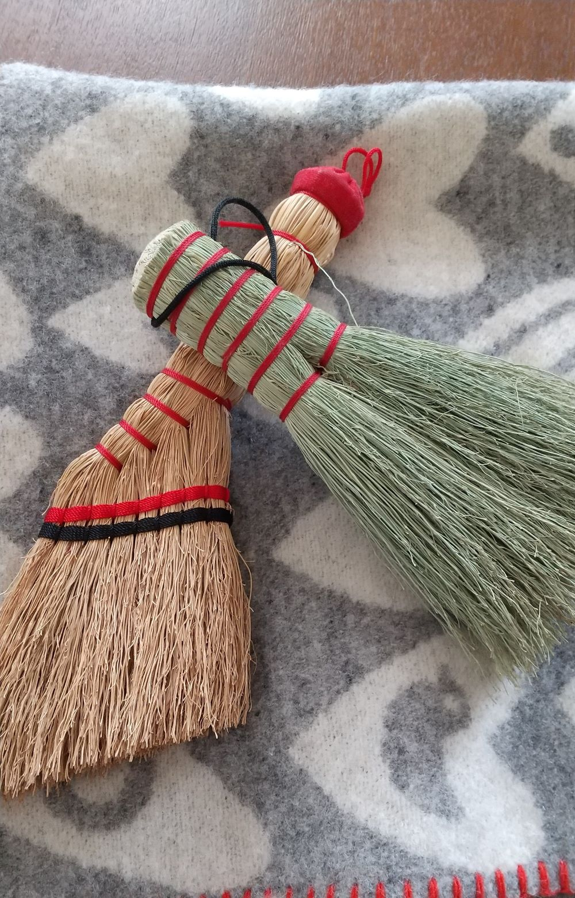

店舗紹介
日本各地、世界の味のある器や日常的に使用する道具を中心に取り扱っています。
また、最近は日本の民芸品も並ぶようになりました。
ぜひ、一度足を運んでいただくとうれしいです。
商品紹介
各地の器
日本各地や世界のお手頃で味のある器を取り扱っています。

日常道具
日本の伝統工芸品で日常づかいができる道具を取り扱っています。
民芸品
日本各地の民芸品でかわいらしいものを中心に取り扱っています。
アクセス
住所：宮城県仙台市泉区桂２－１－１
電話番号：022-222-2222
メールアドレス：komono-komise@yahoo.co.jp